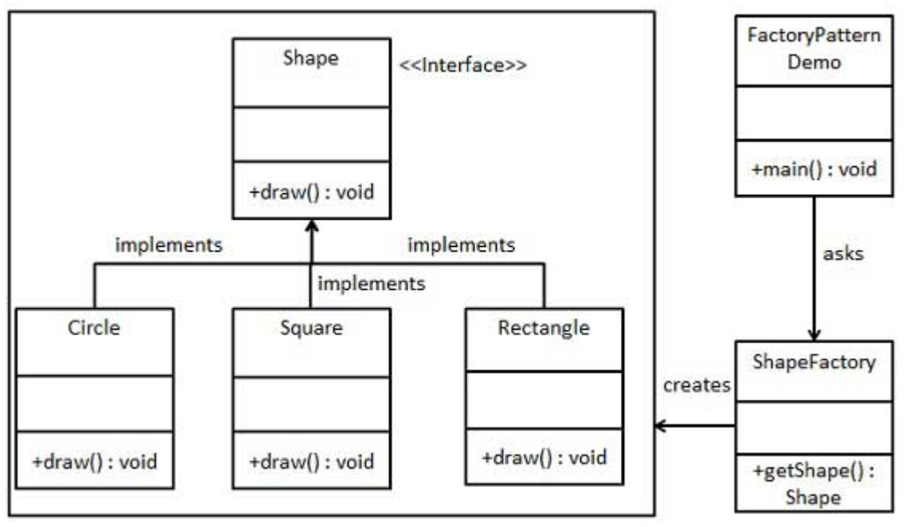

工厂模式简介
创建型模式：它提供了一种创建对象的最佳方式。在工厂模式中，我们在创建对象时不会对客户端暴露创建逻辑，并且是通过使用一个共同的接口来指向新创建的对象。
意图：定义一个创建对象的接口，让其子类自己决定实例化哪一个工厂类，工厂模式使其创建过程延迟到子类进行。
主要解决：主要解决接口选择的问题。
何时使用：我们明确地计划不同条件下创建不同实例时。
如何解决：让其子类实现工厂接口，返回的也是一个抽象的产品。
关键代码：创建过程在其子类执行。
应用实例：
1、您需要一辆汽车，可以直接从工厂里面提货，而不用去管这辆汽车是怎么做出来的，以及这个汽车里面的具体实现。
2、Hibernate 换数据库只需换方言和驱动就可以。
优点：
1、一个调用者想创建一个对象，只要知道其名称就可以了。
2、扩展性高，如果想增加一个产品，只要扩展一个工厂类就可以。
3、屏蔽产品的具体实现，调用者只关心产品的接口。
缺点：每次增加一个产品时，都需要增加一个具体类和对象实现工厂，使得系统中类的个数成倍增加，在一定程度上增加了系统的复杂度，同时也增加了系统具体类的依赖。这并不是什么好事。
使用场景：
1、日志记录器：记录可能记录到本地硬盘、系统事件、远程服务器等，用户可以选择记录日志到什么地方。
2、数据库访问，当用户不知道最后系统采用哪一类数据库，以及数据库可能有变化时。
3、设计一个连接服务器的框架，需要三个协议，”POP3”、”IMAP”、”HTTP”，可以把这三个作为产品类，共同实现一个接口。
注意事项：作为一种创建类模式，在任何需要生成复杂对象的地方，都可以使用工厂方法模式。有一点需要注意的地方就是复杂对象适合使用工厂模式，而简单对象，特别是只需要通过new就可以完成创建的对象，无需使用工厂模式。如果使用工厂模式，就需要引入一个工厂类，会增加系统的复杂度。
工厂模式实现
我们将创建一个Shape接口和实现Shape接口的实体类。下一步是定义工厂类 ShapeFactory。FactoryPatternDemo，我们的演示类使用ShapeFactory来获取Shape对象。它将向ShapeFactory传递信息（CIRCLE / RECTANGLE / SQUARE），以便获取它所需对象的类型。

创建一个接口：shape.java
1
2
3
| public interface Shape {
void draw();
}
|
创建实现接口的实体类：Rectangle.java、Square.java、Circle.java
1
2
3
4
5
6
| public class Rectangle implements Shape {
@Override
public void draw() {
System.out.println("Inside Rectangle::draw() method.");
}
}
|
1
2
3
4
5
6
| public class Square implements Shape {
@Override
public void draw() {
System.out.println("Inside Square::draw() method.");
}
}
|
1
2
3
4
5
6
| public class Circle implements Shape {
@Override
public void draw() {
System.out.println("Inside Circle::draw() method.");
}
}
|
创建一个工厂，生成基于给定信息的实体类的对象：
1
2
3
4
5
6
7
8
9
10
11
12
13
14
| public class ShapeFactory {
public Shape getShape(String shapeType){
if(shapeType == null){
return null;
} if(shapeType.equalsIgnoreCase("CIRCLE")){
return new Circle();
} else if(shapeType.equalsIgnoreCase("RECTANGLE")){
return new Rectangle();
} else if(shapeType.equalsIgnoreCase("SQUARE")){
return new Square();
} return null;
}
}
|
使用该工厂，通过传递类型信息来获取实体类的对象：FactoryPatternDemo.java
1
2
3
4
5
6
7
8
9
10
11
12
13
14
15
16
17
| public class FactoryPatternDemo {
public static void main(String[] args) {
ShapeFactory shapeFactory = new ShapeFactory();
Shape shape1 = shapeFactory.getShape("CIRCLE");
shape1.draw();
Shape shape2 = shapeFactory.getShape("RECTANGLE");
shape2.draw();
Shape shape3 = shapeFactory.getShape("SQUARE");
shape3.draw();
}
}
|